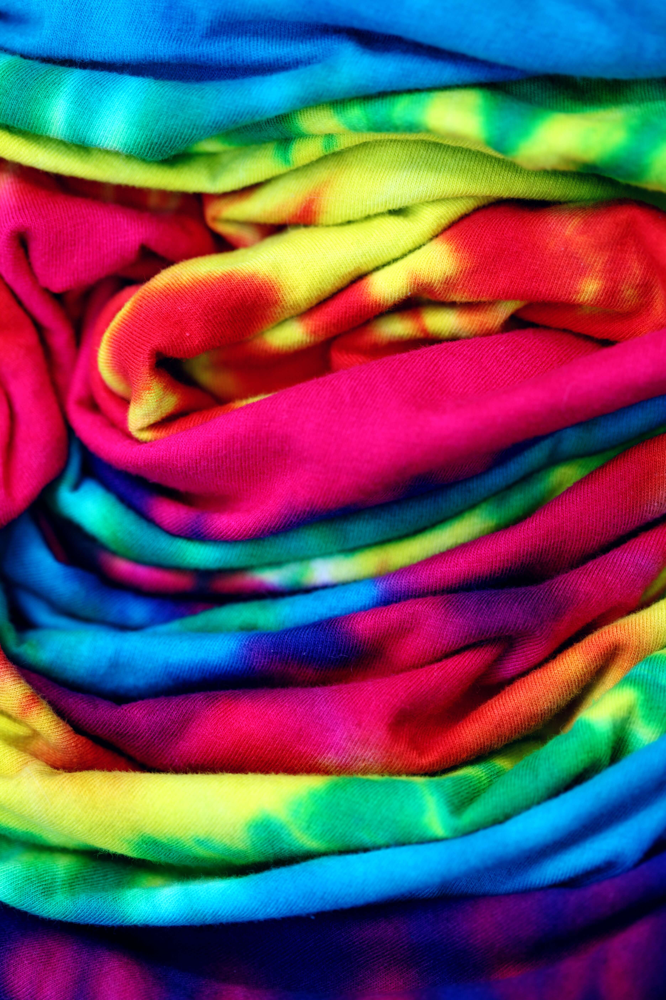

Dying Techniques
Dying Techniques
One of the things that makes tie-dyeing so exciting is the wide range of techniques and methods available to create different effects and patterns. Some of the most popular methods include liquid dyeing, ice dyeing, reverse dyeing, and hot water immersion dyeing. Liquid dyeing involves applying liquid dye directly to the fabric using a variety of techniques, while ice dyeing uses ice and powdered dye to create a unique watercolor effect. Reverse dyeing involves removing color from the fabric using bleach or other chemicals, while hot water irrigation dyeing uses boiling water to create bold, vibrant colors. Each of these methods offers its own unique challenges and rewards, and can be a fun and rewarding way to explore the world of tie-dyeing.
Ice/Snow Dye
Tie-dyeing with ice is a fun and easy way to create beautiful, unpredictable patterns on fabric. To get started, you'll need to gather your materials, including fabric, dye, ice, and rubber bands. Begin by twisting and tying your fabric into the desired shape, then place it on a raised surface over a drip tray. Cover the fabric with a layer of ice, then sprinkle the dye powder over the ice, making sure to cover all areas of the fabric. Allow the ice to melt naturally, taking care not to disturb the fabric, then rinse it under cold water and wash it to set the dye. The result will be a stunning, one-of-a-kind piece of tie-dye fabric!

Liquid Dye
Tie-dyeing with liquid dye is a classic and popular method for creating unique and colorful designs on fabric. To get started, you'll need fabric, liquid dye, water, rubber bands, and gloves. First, wet your fabric and twist or fold it into your desired pattern, then secure it with rubber bands. Mix your liquid dye according to the package instructions, then apply it to the fabric using squeeze bottles, brushes, or other tools. Be sure to saturate the fabric thoroughly with dye to ensure a vibrant and long-lasting result. Allow the dye to set for several hours or overnight, then rinse the fabric under cold water until the water runs clear. Wash the fabric in hot water and dry it to set the colors and complete the process. With liquid dye, the possibilities for creating unique and personalized tie-dye designs are endless!
Reverse Dye
Reverse dyeing is a fascinating and challenging technique for creating intricate and detailed patterns on fabric. To begin, gather your materials, including fabric, bleach, rubber bands, water, and gloves. Twist or fold your fabric into your desired pattern, then secure it with rubber bands. Apply bleach to the fabric using a variety of techniques, such as brushing, spraying, or dipping, then let it sit for several minutes or until the color begins to fade. Rinse the fabric thoroughly under cold water and remove the rubber bands to reveal your design. Wash the fabric in hot water and dry it to complete the process. With reverse dyeing, you can experiment with different bleach application techniques to create a wide range of unique and stunning designs.
Hot Water Irrigation Dye
Hot water irrigation dyeing is a fascinating and experimental method for creating bold and vibrant tie-dye designs. To begin, get your fabric, powdered dye, rubber bands, garden sprayer, hot water, and gloves. Place your fabric on a raised surface and twist, fold, or tie it into your desired pattern. Sprinkle the powdered dye onto the fabric, focusing on areas that you want to be more intense. Prepare a large pot of hot water and use a garden sprayer to gently spray the hot water over the powdered dye. Allow the fabric to sit for several minutes or until the dye has dissolved and the colors have set. Rinse the fabric under cold water and remove the rubber bands to reveal your unique and colorful design. Wash the fabric in hot water to set the colors and complete the process. With hot water irrigation dyeing, you can experiment with different dye colors, fabric manipulation techniques, and dye application methods to create stunning and visually striking designs.
